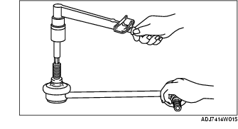

Stabilizer control link inspection
1. Remove the stabilizer control link from the vehicle.
2. Inspect for bending or damage. If there is any malfunction, replace the stabilizer control link.
3. Rotate the ball joint stud 10 times, and then rock it side to side 10 times.
4. Measure the ball joint rotational torque using a suitable hexagonal allen wrench and torque wrench.

Front stabilizer control link ball joint rotational torque